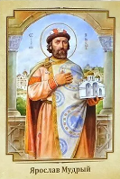

Владимир Святославич

Святой Ярослав Мудрый (ок. 978 — 20 февраля 1054) — великий князь Киевский с 1016 года (с перерывом в 1018—1019), происходит из рода Рюриковичей, в крещении получил имя Георгий (Юрий).
Сын святого князя Владимира I Святославича и полоцкой княжны Рогнеды Рогволодовны (некоторые историки ставят под сомнение то, что Ярослав Мудрый был сыном Рогнеды). Повесть временных лет восхваляет ум, проницательность, благоразумие и храбрость Ярослава Мудрого.